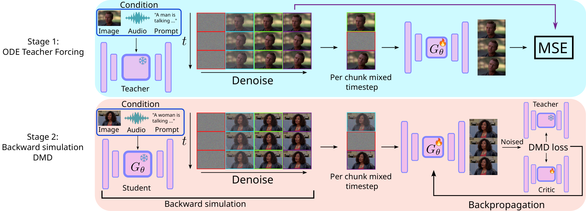
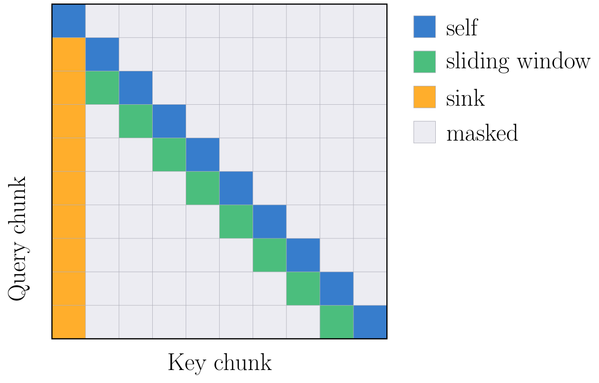
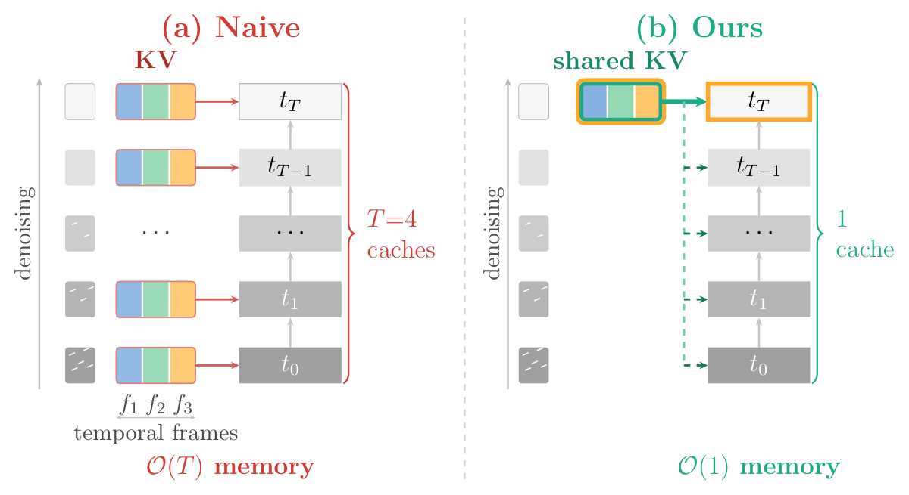
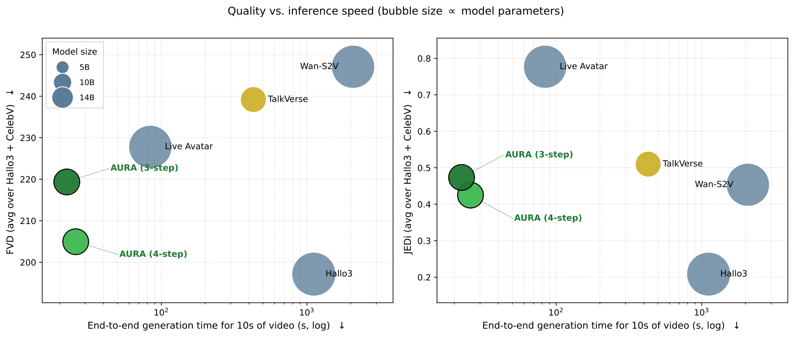
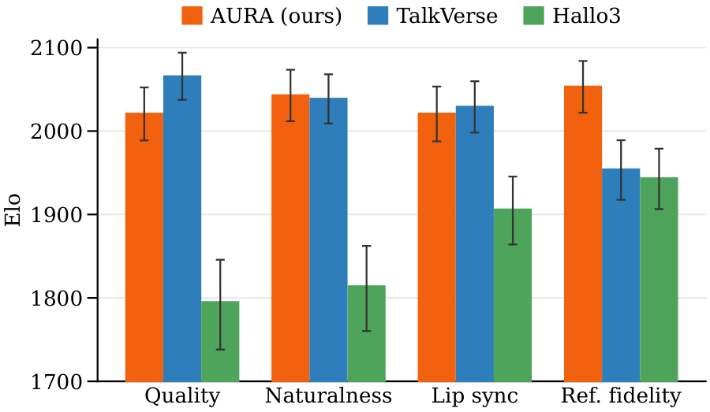

Streaming, causal, few-step audio-driven talking-head video generation.
1Kyutai · 2Sorbonne Université, ISIR
AURA distills a 50-step bidirectional teacher into a 4-step causal student for audio-driven video generation. It streams 720p talking-head video chunk-by-chunk at 9.7 FPS on a single GPU with a rolling KV cache — matching teacher quality at 17× the speed, with no audio look-ahead.
Figure 1. AURA generates 720p talking-head videos at 9.7 FPS on a single GPU in a causal streaming manner, per chunk of 0.64s. Samples generated from the same speech audio with different reference identities and text prompts.
Abstract
Current audio-driven video diffusion models can synthesize realistic talking-head videos but generally require dozens of diffusion denoising steps over multi-second video chunks, making them unsuitable for streaming applications such as voice assistants and virtual avatars, where low latency and online causal generation are required properties. AURA generates high-resolution video chunk-by-chunk at 9.7 fps with a rolling KV cache, requiring only the audio of the current chunk rather than the multi-second audio look-ahead buffered by bidirectional models, making it well-suited to interactive avatar applications. Our two-stage distillation pipeline first aligns the causal student with the teacher, by training it to match the teacher's trajectories with fewer diffusion steps and a chunk-wise causal attention mask, then applies Distribution Matching Distillation (DMD) with backward simulation to close the remaining quality gap. On standard talking-head benchmarks, AURA matches the teacher's quality while running 17× faster, achieving 720p avatar streaming on a single GPU. To support reproducibility and further research, we release our model's weights along with a dataset of 30K synthetic videos and their precomputed teacher trajectories.
Method

static/images/method.pngFigure 2. Two-stage distillation pipeline. Stage 1 (ODE teacher forcing) regresses the causal student onto the frozen teacher's multi-step ODE trajectory. Stage 2 (backward-simulation DMD) unrolls the student without gradients, then matches teacher and critic scores on the student's own trajectory.
Three modifications turn TalkVerse's 50-step bidirectional teacher (5B params) into a 4-step causal student: block-wise causal attention over chunks of 4 latent frames (∼0.64s, Figure 3a), no motion-frame conditioning (the KV cache already carries temporal context), and per-chunk mixed diffusion timesteps (Figure 2, bottom middle).
Stage 1 regresses the student onto the teacher's ODE trajectories (5 timesteps, 30K synthetic clips) via MSE. Stage 2 applies Distribution Matching Distillation with backward simulation — training on the student's own rollout states — to close the remaining few-step quality gap (Figure 2).
The student streams one chunk at a time with 4 denoising steps. Mixed-timestep training lets each past chunk be cached once (Figure 3b); a rolling window keeps only a fixed identity anchor (first chunk) and the most recent chunk, giving constant memory regardless of video length (Figure 3a).

static/images/fig_mask.pngFigure 3(a). Sliding-window causal attention mask (training). Each chunk of 4 latent frames attends to itself, the preceding chunk, and the initial chunk as an attention sink.

static/images/fig_kvcache.pngFigure 3(b). KV caching with and without per-chunk mixed timesteps: naive caching scales memory with the number of denoising steps T; mixed-timestep training shares one cache across all steps (O(1) memory).
Results
Samples from the HALLO3 Test and CelebV-HQ Test benchmarks. Press play on any clip to watch it with audio.
results/01.mp4results/02.mp4results/03.mp4results/04.mp4results/05.mp4results/06.mp4Comparisons
AURA vs. its teacher TalkVerse (5B, 50-step) and prior streaming/non-causal baselines. Playback is synchronized across all methods. Switch test set and sample below.
All methods share the same driving audio — unmute plays the reference track.
Quantitative
FID, FVD and JEDi (visual quality; FVD/JEDi averaged over three temporal offsets to probe inter-chunk discontinuities), Sync-C/D (lip-sync), CSIM (identity via ArcFace), and warping error (WE, temporal consistency via RAFT). All fps on a single H100 GPU. Bold: best; underlined: second best.

static/images/bubble_plot.pngFigure 4. Quality–speed trade-off across audio-driven avatar models: FVD and JEDi (lower is better) vs. end-to-end generation time for 10s of video on a single H100 (log scale), averaged over the HALLO3 and CelebV-HQ test sets. Bubble area is proportional to model parameter count — AURA matches multi-step baselines at a fraction of their generation time.
Table 1 — HALLO3 Test (100 clips, 10s, real English speech)
| Method | Params | Res | Steps | DiT/VAE fps ↑ | Total fps ↑ | FID ↓ | FVD ↓ | JEDi ↓ | CSIM ↑ | Sync-C ↑ | Sync-D ↓ | WE ↓ |
|---|---|---|---|---|---|---|---|---|---|---|---|---|
| Hallo3 | 14.5B | 480p | 50 | 0.24/3.2 | 0.22 | 43.1 | 186.3 | 0.16 | 0.74 | 5.06 | 9.9 | 0.0036 |
| Wan-S2V | 14B | 720p | 40 | 0.08/6.7 | 0.08 | 55.2 | 200.5 | 0.27 | 0.71 | 5.40 | 9.0 | 0.0032 |
| TalkVerse (teacher) | 5B | 720p | 50 | 0.69/7.4 | 0.58 | 55.7 | 215.5 | 0.42 | 0.74 | 3.82 | 10.5 | 0.0019 |
| Live Avatar | 14B | 480p | 4 | 8.4/4.3 | 1.9 | 50.8 | 182.7 | 0.47 | 0.77 | 4.90 | 9.3 | 0.0039 |
| AURA (ours) | 5B | 720p | 4 | 19.7/22.7 | 9.7 | 56.2 | 191.0 | 0.37 | 0.80 | 4.17 | 9.97 | 0.0034 |
| AURA (3 steps) | 5B | 720p | 3 | 26.0/22.7 | 11.2 | 56.5 | 199.7 | 0.37 | 0.77 | 4.27 | 9.85 | 0.0033 |
AURA (3 steps) samples — the faster variant from the table above (11.2 fps end-to-end, vs. 9.7 fps for the 4-step default), at a small quality cost.
three_step/1.mp4three_step/2.mp4Table 2 — CelebV-HQ Test (150 clips, 8–20s, TTS-synthesized speech)
| Method | Params | Res | Steps | DiT/VAE fps ↑ | Total fps ↑ | FID ↓ | FVD ↓ | JEDi ↓ | CSIM ↑ | Sync-C ↑ | Sync-D ↓ | WE ↓ |
|---|---|---|---|---|---|---|---|---|---|---|---|---|
| Hallo3 | 14.5B | 480p | 50 | 0.24/3.2 | 0.22 | 36.0 | 208.0 | 0.257 | 0.71 | 6.20 | 9.4 | 0.0038 |
| Wan-S2V | 14B | 720p | 40 | 0.08/6.7 | 0.08 | 46.7 | 293.7 | 0.640 | 0.62 | 6.20 | 8.9 | 0.0061 |
| TalkVerse (teacher) | 5B | 720p | 50 | 0.69/7.4 | 0.58 | 56.3 | 262.9 | 0.600 | 0.59 | 4.80 | 10.5 | 0.0059 |
| Live Avatar | 14B | 480p | 4 | 8.4/4.3 | 1.9 | 43.1 | 272.9 | 1.087 | 0.67 | 5.90 | 9.2 | 0.0057 |
| AURA (ours) | 5B | 720p | 4 | 19.7/22.7 | 9.7 | 45.9 | 218.9 | 0.477 | 0.74 | 4.70 | 10.1 | 0.0055 |
| AURA (3 steps) | 5B | 720p | 3 | 26.0/22.7 | 11.2 | 44.0 | 239.0 | 0.577 | 0.65 | 4.90 | 9.9 | 0.0065 |
AURA beats its TalkVerse teacher on most quality metrics with only 4 denoising steps instead of 50, and matches the much larger Wan-S2V (14B) on FVD, JEDi and audio-visual alignment. It is the fastest method overall — 9.7 fps end-to-end, a 17× speedup over the teacher (30× on the diffusion transformer alone), see Figure 4. While Hallo3 tops FID/FVD/JEDi on both test sets, qualitative inspection (Figure 8 in the paper) shows it produces exaggerated mouth motion and recurrent hand artifacts that these distribution-based metrics fail to flag.
User study
To assess perceived quality directly, we run an anonymous human evaluation on the Mabyduck platform: 300 pairwise comparisons from 30 raters on the 100 HALLO3 Test clips, comparing AURA against Hallo3 and against the TalkVerse teacher along four axes — overall visual quality, lip-sync, reference fidelity, and naturalness — aggregated into per-axis Bayesian Elo scores (Figure 5). AURA is preferred over Hallo3 on all four axes, confirming that Hallo3's distribution-metric lead does not translate into perceived quality. Against the non-causal, 50-step teacher, AURA ranks higher on reference fidelity, on par for lip-sync and naturalness, and only marginally behind on visual quality — despite being causal and 17× faster.

static/images/elo_barplot.pngFigure 5. Human preference study: per-axis Bayesian Elo (↑) from 300 pairwise comparisons by 30 raters on the HALLO3 Test clips; error bars are 95% CIs.
Table 3 — Long-form streaming stability
| Metric | 0–10s | 10–20s | 20–30s | 30–40s | 40–50s | 50–60s | Mean |
|---|---|---|---|---|---|---|---|
| FVD ↓ | 186.7 | 189.6 | 181.2 | 189.7 | 189.3 | 187.7 | 187.4 |
| CSIM ↑ | 0.784 | 0.779 | 0.767 | 0.758 | 0.713 | 0.754 | 0.759 |
| Sync-C ↑ | 4.81 | 4.99 | 4.85 | 4.67 | 4.46 | 4.65 | 4.74 |
| Warp ↓ (×10-3) | 3.82 | 3.80 | 3.78 | 3.67 | 4.30 | 3.78 | 3.86 |
AURA (4 steps) generates 60s of video per HALLO3 Test reference (100 clips), with metrics computed per consecutive 10s segment. All metrics fluctuate only marginally with no monotonic trend across the six segments — no systematic identity drift or accumulating chunk-boundary artifacts at the minute scale, confirming the rolling KV cache sustains quality over an unbounded stream at constant memory.
ablations/long_form.mp4Full 60s continuous streaming generation from a single HALLO3 Test reference.
Ablations
All ablations use the 5B student trained on the full pipeline, evaluated on the HALLO3 Test set with shorter 6.3s clips to reduce compute (vs. the 10s clips used in the main results above). Best value per column in bold.
Table 4 — Number of diffusion steps per chunk
| #Steps | FID ↓ | FVD ↓ | JEDi ↓ | CSIM ↑ | Sync-C ↑ | Sync-D ↓ | WE ↓ | DiT fps ↑ |
|---|---|---|---|---|---|---|---|---|
| 4 (default) | 57.2 | 191.0 | 0.37 | 0.80 | 4.09 | 10.02 | 0.0034 | 19.7 |
| 3 | 57.4 | 199.7 | 0.37 | 0.77 | 4.18 | 9.91 | 0.0033 | 26.0 |
| 2 | 57.7 | 200.1 | 0.42 | 0.80 | 4.18 | 9.93 | 0.0032 | 38.5 |
| 1 | 60.2 | 231.7 | 0.65 | 0.65 | 4.09 | 9.77 | 0.0031 | 75.8 |
Quality degrades gradually from 4 to 2 steps and drops sharply at 1 step; lip-sync stays roughly constant. Warp error looks better with fewer steps, but this reflects blurrier, lower-detail outputs rather than a real gain — not a genuine improvement in temporal consistency.
ablations/steps.mp4Same clip generated with 1, 2, 3 and 4 denoising steps.
Table 5 — Stage 1 only vs. Stage 1 + Stage 2 (DMD)
| Variant | FID ↓ | FVD ↓ | JEDi ↓ | CSIM ↑ | Sync-C ↑ | Sync-D ↓ | WE ↓ |
|---|---|---|---|---|---|---|---|
| Stage 1 only | 73.0 | 267.0 | 0.75 | 0.55 | 3.36 | 10.17 | 0.0026 |
| Stage 1 + Stage 2 | 57.2 | 191.0 | 0.37 | 0.80 | 4.09 | 10.02 | 0.0034 |
Adding the DMD stage substantially improves perceptual quality (FID, FVD, JEDi), identity preservation (CSIM), and lip-sync — Stage 1 alone cannot close the few-step gap to the teacher.
ablations/stage.mp4Same clip with Stage 1 only vs. the full Stage 1 + Stage 2 pipeline.
Table 6 — KV cache refresh with an additional inference step
| Variant | FID ↓ | FVD ↓ | JEDi ↓ | CSIM ↑ | Sync-C ↑ | Warp ↓ | DiT fps ↑ |
|---|---|---|---|---|---|---|---|
| 4 steps (default) | 57.2 | 191.0 | 0.37 | 0.80 | 4.09 | 0.0034 | 19.7 |
| 5-step (t=0 refresh) | 56.6 | 197.7 | 0.37 | 0.79 | 4.03 | 0.0035 | 15.6 |
| 5-step (t=50 refresh) | 54.9 | 196.1 | 0.40 | 0.78 | 4.08 | 0.0036 | 15.6 |
| 5-step (t=50, used) | 53.6 | 198.3 | 0.40 | 0.77 | 4.11 | 0.0037 | 15.6 |
None of the refresh variants consistently beats the simpler 4-step default once the added inference cost is accounted for, so AURA keeps the 4-step design.
ablations/kv_refresh.mp4Same clip across the 4-step default and the 5-step KV cache refresh variants.
Table 7 — Rolling cache window size
| Variant | FID ↓ | FVD ↓ | JEDi ↓ | CSIM ↑ | Sync-C ↑ | WE ↓ | DiT fps ↑ |
|---|---|---|---|---|---|---|---|
| n=1 (default) | 57.2 | 191.0 | 0.37 | 0.80 | 4.09 | 0.0034 | 20 |
| n=2 | 57.8 | 200.8 | 0.44 | 0.79 | 4.00 | 0.0037 | 18 |
Retaining a second past chunk (n=2) in the rolling cache, on top of the first-chunk identity anchor, improves no metric while increasing cache size and lowering throughput — AURA keeps a single-chunk window.
ablations/window_size.mp4Same clip with a single-chunk (n=1) vs. two-chunk (n=2) rolling cache window.
Citation
@inproceedings{cohen2026aura,
title = {{AURA}: {AU}dio-d{R}iven streaming {A}vatar},
author = {Cohen, Nathaniel and Dufour, Nicolas and Royer, Am{\'e}lie
and Newson, Alasdair and P{\'e}rez, Patrick},
booktitle = {British Machine Vision Conference (BMVC)},
year = {2026},
}